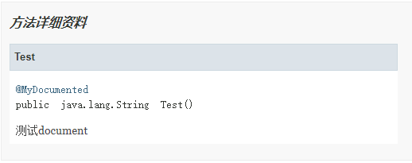
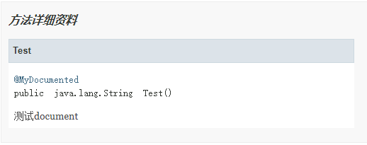

Java元注解作用及使用
元注解是负责对其它注解进行说明的注解，自定义注解时可以使用元注解。Java 5 定义了 4 个注解，分别是 @Documented、@Target、@Retention 和 @Inherited。Java 8 又增加了 @Repeatable 和 @Native 两个注解。这些注解都可以在 java.lang.annotation 包中找到。下面主要介绍每个元注解的作用及使用。
下面通过示例来了解它的用法，代码如下所示。


生命周期大小排序为 SOURCE < CLASS < RUNTIME，前者能使用的地方后者一定也能使用。如果需要在运行时去动态获取注解信息，那只能用 RUNTIME 注解；如果要在编译时进行一些预处理操作，比如生成一些辅助代码（如 ButterKnife），就用 CLASS 注解；如果只是做一些检查性的操作，比如 @Override 和 @SuppressWarnings，则可选用 SOURCE 注解。
两种方法获得的效果相同。重复注解只是一种简化写法，这种简化写法是一种假象，多个重复注解其实会被作为“容器”注解的 value 成员的数组元素处理。
本节示例会用到自定义注解，不了解可先阅读学习《Java自定义注解》一节。
@Documented
@Documented 是一个标记注解，没有成员变量。用 @Documented 注解修饰的注解类会被 JavaDoc 工具提取成文档。默认情况下，JavaDoc 是不包括注解的，但如果声明注解时指定了 @Documented，就会被 JavaDoc 之类的工具处理，所以注解类型信息就会被包括在生成的帮助文档中。下面通过示例来了解它的用法，代码如下所示。
例 1
@Documented
@Target({ ElementType.TYPE, ElementType.METHOD })
public @interface MyDocumented {
public String value() default "这是@Documented注解";
}
测试类：
@MyDocumented
public class DocumentedTest {
/**
* 测试document
*/
@MyDocumented
public String Test() {
return "C语言中文网Java教程";
}
}
打开 Java 文件所在的目录，分别输入如下两条命令行：
javac MyDocumented.java DocumentedTest.java javadoc -d doc MyDocumented.java DocumentedTest.java运行成功后，打开生成的帮助文档，可以看到在类和方法上都保留了 MyDocument 的注解信息。如下图所示：

@Target
@Target 注解用来指定一个注解的使用范围，即被 @Target 修饰的注解可以用在什么地方。@Target 注解有一个成员变量（value）用来设置适用目标，value 是 java.lang.annotation.ElementType 枚举类型的数组，下表为 ElementType 常用的枚举常量。| 名称 | 说明 |
|---|---|
| CONSTRUCTOR | 用于构造方法 |
| FIELD | 用于成员变量（包括枚举常量） |
| LOCAL_VARIABLE | 用于局部变量 |
| METHOD | 用于方法 |
| PACKAGE | 用于包 |
| PARAMETER | 用于类型参数（JDK 1.8新增） |
| TYPE | 用于类、接口（包括注解类型）或 enum 声明 |
例 2
自定义一个 MyTarget 注解，使用范围为方法，代码如下所示。
@Target({ ElementType.METHOD })
public @interface MyTarget {
}
class Test {
@MyTarget
String name;
}
如上代码第 6 行会编译错误，错误信息为：
The annotation @MyTarget is disallowed for this location
提示此位置不允许使用注解 @MyDocumented，@MyTarget 不能修饰成员变量，只能修饰方法。@Retention
@Retention 用于描述注解的生命周期，也就是该注解被保留的时间长短。@Retention 注解中的成员变量（value）用来设置保留策略，value 是 java.lang.annotation.RetentionPolicy 枚举类型，RetentionPolicy 有 3 个枚举常量，如下所示。- SOURCE：在源文件中有效（即源文件保留）
- CLASS：在 class 文件中有效（即 class 保留）
- RUNTIME：在运行时有效（即运行时保留）
生命周期大小排序为 SOURCE < CLASS < RUNTIME，前者能使用的地方后者一定也能使用。如果需要在运行时去动态获取注解信息，那只能用 RUNTIME 注解；如果要在编译时进行一些预处理操作，比如生成一些辅助代码（如 ButterKnife），就用 CLASS 注解；如果只是做一些检查性的操作，比如 @Override 和 @SuppressWarnings，则可选用 SOURCE 注解。
@Inherited
@Inherited 是一个标记注解，用来指定该注解可以被继承。使用 @Inherited 注解的 Class 类，表示这个注解可以被用于该 Class 类的子类。就是说如果某个类使用了被 @Inherited 修饰的注解，则其子类将自动具有该注解。例 3
创建一个自定义注解，代码如下所示：
@Target({ ElementType.TYPE })
@Inherited
@Retention(RetentionPolicy.RUNTIME)
public @interface MyInherited {
}
测试类代码如下：
@MyInherited
public class TestA {
public static void main(String[] args) {
System.out.println(TestA.class.getAnnotation(MyInherited.class));
System.out.println(TestB.class.getAnnotation(MyInherited.class));
System.out.println(TestC.class.getAnnotation(MyInherited.class));
}
}
class TestB extends TestA {
}
class TestC extends TestB {
}
运行结果为：
@MyInherited()
@MyInherited()
@MyInherited()
@Repeatable
@Repeatable 注解是 Java 8 新增加的，它允许在相同的程序元素中重复注解，在需要对同一种注解多次使用时，往往需要借助 @Repeatable 注解。Java 8 版本以前，同一个程序元素前最多只能有一个相同类型的注解，如果需要在同一个元素前使用多个相同类型的注解，则必须使用注解“容器”。例 4
Java 8 之前的做法：
public @interface Roles {
Role[] roles();
}
public @interface Roles {
Role[] value();
}
public class RoleTest {
@Roles(roles = {@Role(roleName = "role1"), @Role(roleName = "role2")})
public String doString(){
return "这是C语言中国网Java教程";
}
}
Java 8 之后增加了重复注解，使用方式如下：
public @interface Roles {
Role[] value();
}
@Repeatable(Roles.class)
public @interface Role {
String roleName();
}
public class RoleTest {
@Role(roleName = "role1")
@Role(roleName = "role2")
public String doString(){
return "这是C语言中文网Java教程";
}
}
不同的地方是，创建重复注解 Role 时加上了 @Repeatable 注解，指向存储注解 Roles，这样在使用时就可以直接重复使用 Role 注解。从上面例子看出，使用 @Repeatable 注解更符合常规思维，可读性强一点。两种方法获得的效果相同。重复注解只是一种简化写法，这种简化写法是一种假象，多个重复注解其实会被作为“容器”注解的 value 成员的数组元素处理。
@Native
使用 @Native 注解修饰成员变量，则表示这个变量可以被本地代码引用，常常被代码生成工具使用。对于 @Native 注解不常使用，了解即可。关注公众号「站长严长生」，在手机上阅读所有教程，随时随地都能学习。内含一款搜索神器，免费下载全网书籍和视频。

微信扫码关注公众号